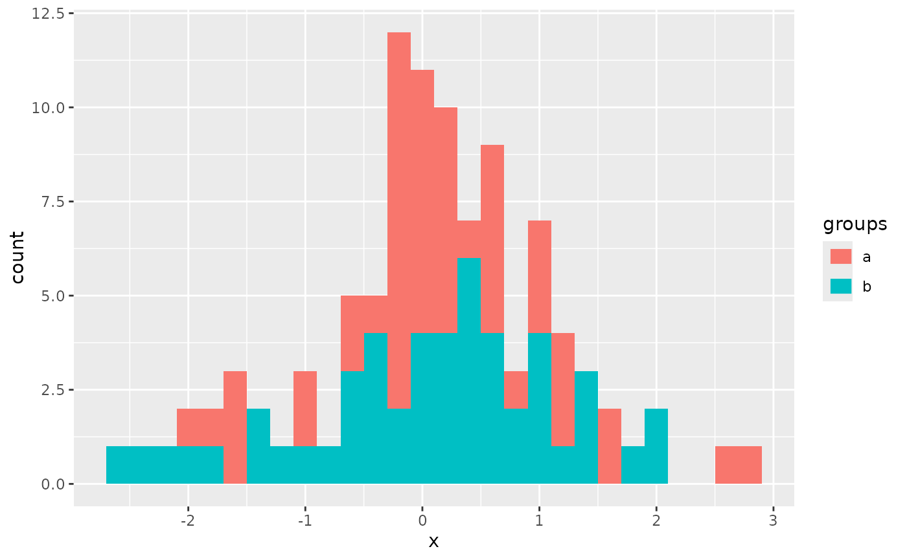
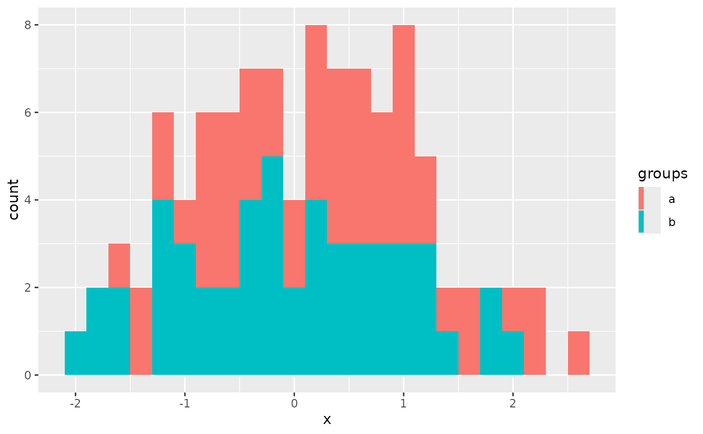

Each geom has an associated function that draws the key when the geom needs
to be displayed in a legend. These functions are called draw_key_*(), where
* stands for the name of the respective key glyph. The key glyphs can be
customized for individual geoms by providing a geom with the key_glyph
argument (see layer() or examples below.)
Examples
## The key glyph for sankey diagrams can be applied to different geoms as well.
## In the example below it is applied to a histogram
library(ggplot2)
ggplot(data.frame(x = rnorm(100), groups = rep(letters[1:2], 2)),
aes(x = x, fill = groups)) +
geom_histogram(key_glyph = draw_key_sankeyedge, binwidth = 0.2, alpha = 1)

ggplot(data.frame(x = rnorm(100), groups = rep(letters[1:2], 2)),
aes(x = x, fill = groups)) +
geom_histogram(key_glyph = draw_key_sankeynode, binwidth = 0.2)
